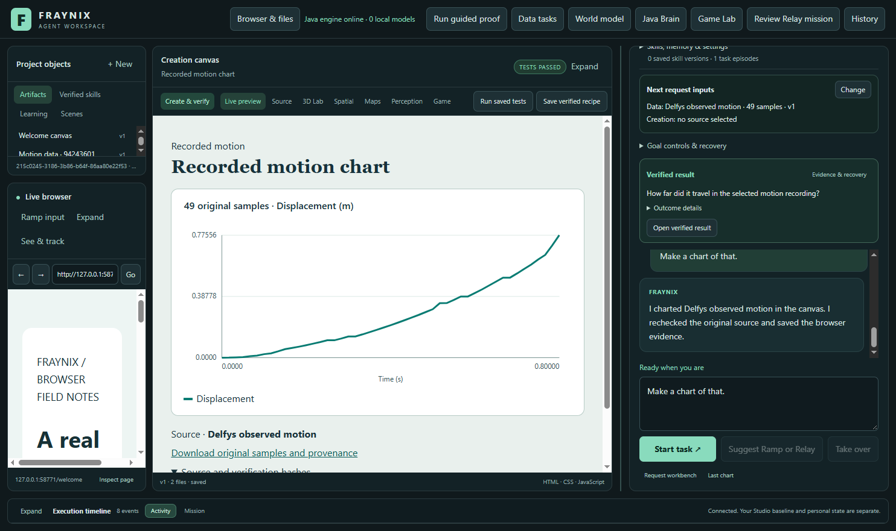
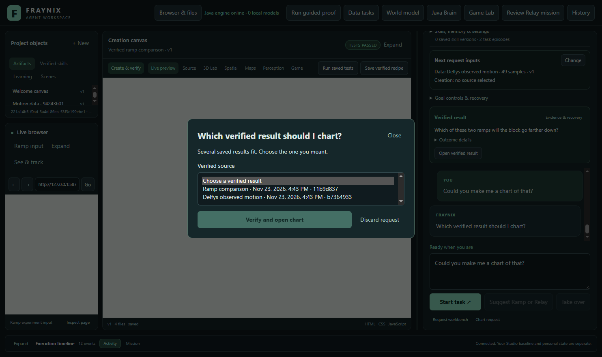
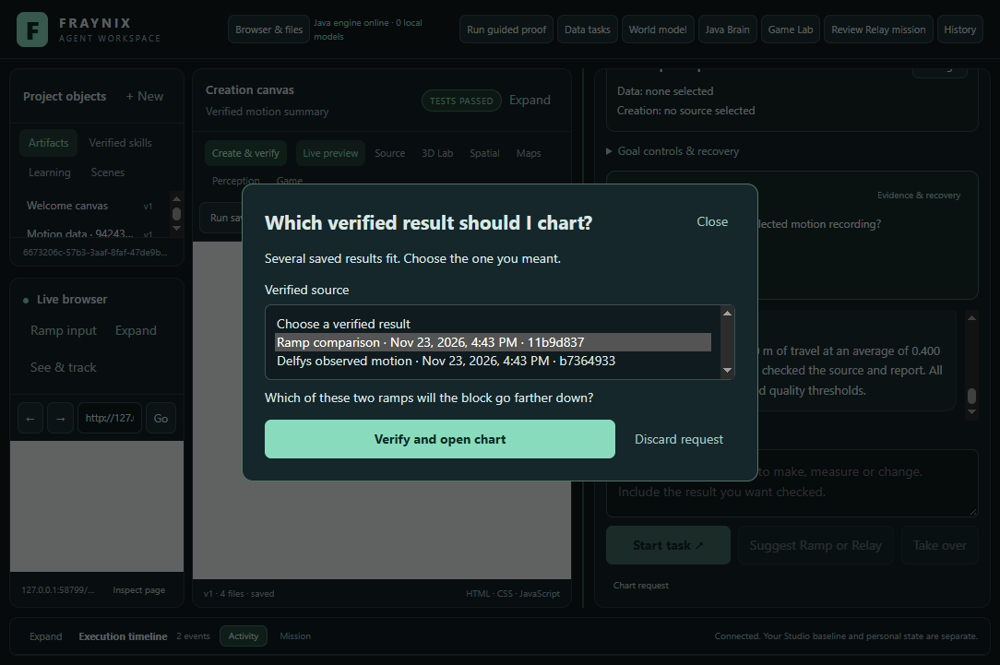
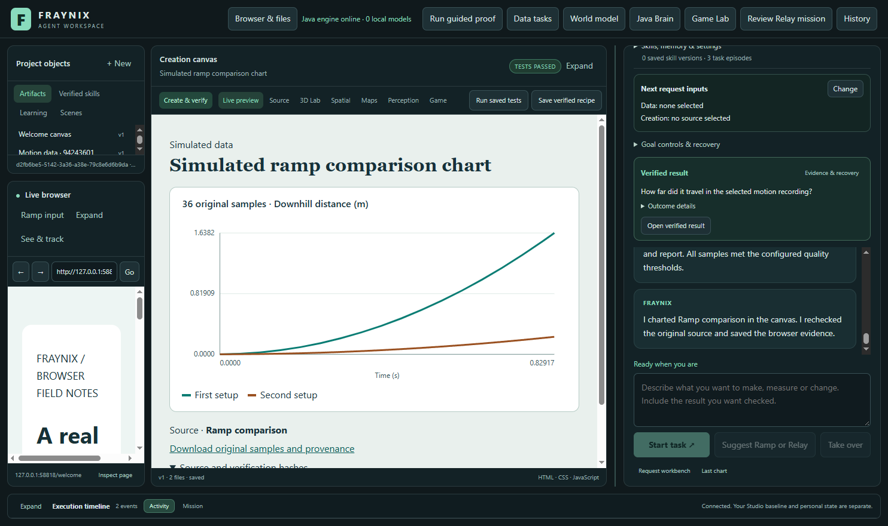
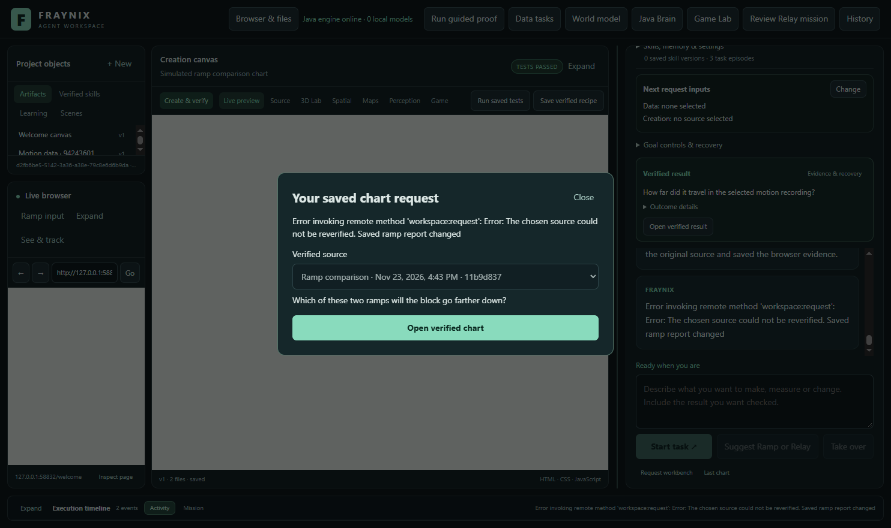

Chart the verified result you meant
Ask “Make a chart of that.” Fraynix uses a single verified source or asks you to choose. The question, selection and checked chart survive restart.

All 49 mapped samples from the recorded-motion source appear in the canvas

Fraynix asks which of two verified results to chart

The original choices are available after restart with the selected ramp highlighted

Two verified ramp traces are plotted on the same clock and labelled as simulated

Fraynix refuses to reopen the chart after its original report changes
System files
Open source